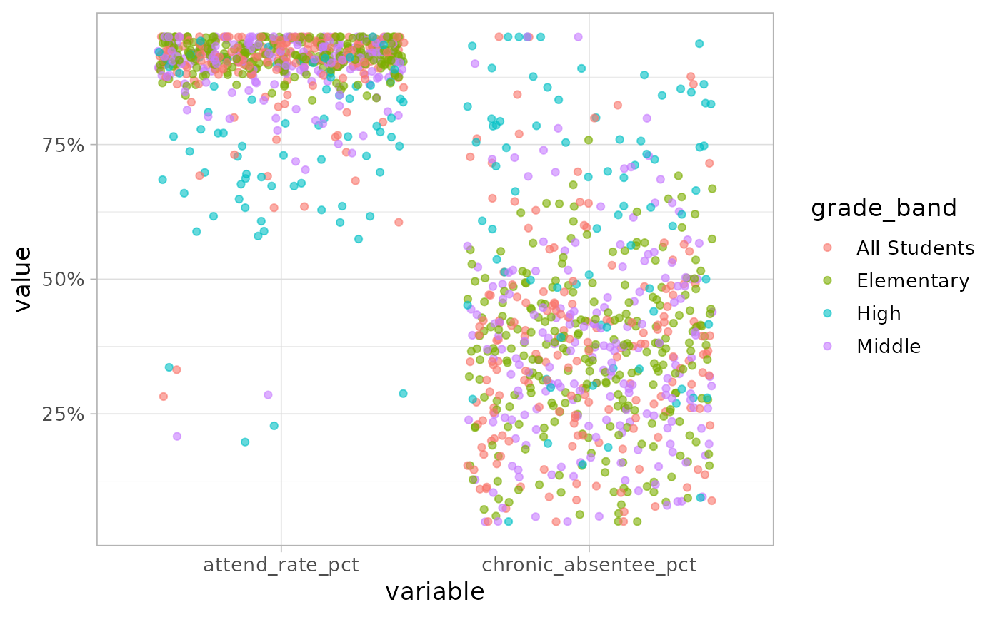

library(bcpss)
library(dplyr)
#>
#> Attaching package: 'dplyr'
#> The following objects are masked from 'package:stats':
#>
#> filter, lag
#> The following objects are masked from 'package:base':
#>
#> intersect, setdiff, setequal, union
library(ggplot2)
# Set a theme for the example plots
theme_set(theme_light(base_size = 13))The MSDE attendance data includes both count and percent variables. Not all of the variables in the wide format are available for all years of the dataset. For example, the chronic absentee rate is only available since the 2018 school year.
glimpse(attendance_msde_SY0919)
#> Rows: 3,197
#> Columns: 15
#> $ school_year <chr> "2009", "2009", "2009", "2009", "2009", "2009",…
#> $ school_number <int> 4, 4, 5, 7, 8, 8, 10, 11, 12, 12, 13, 13, 15, 1…
#> $ school_name <chr> "Steuart Hill Academic Academy", "Steuart Hill …
#> $ grade_band <chr> "Elementary", "Middle", "Elementary", "Elementa…
#> $ attend_rate_pct <dbl> 95.0, 94.7, 95.0, 95.0, 95.0, 93.8, 93.9, 92.7,…
#> $ days_attended_cnt <dbl> NA, 19119, NA, NA, NA, 16398, 28045, 31962, 362…
#> $ days_member_cnt <dbl> NA, 20191, NA, NA, NA, 17491, 29881, 34477, 384…
#> $ fewer_5_pct <dbl> 37.2, 37.2, 55.9, 48.0, 47.0, 42.7, 30.8, 37.5,…
#> $ fewer_5_cnt <dbl> 86, 55, 76, 119, 150, 53, 68, 94, 76, 46, 64, 1…
#> $ more_20_pct <dbl> 6.1, 7.4, 5.0, 5.6, 8.8, 16.1, 12.7, 15.9, 13.0…
#> $ more_20_cnt <dbl> 14, 11, NA, 14, 28, 20, 28, 40, 36, 33, 37, 27,…
#> $ more_90_member_cnt <dbl> 231, 148, 136, 248, 319, 124, 221, 251, 276, 17…
#> $ chronic_absentee_cnt <dbl> NA, NA, NA, NA, NA, NA, NA, NA, NA, NA, NA, NA,…
#> $ chronic_absentee_denom <dbl> NA, NA, NA, NA, NA, NA, NA, NA, NA, NA, NA, NA,…
#> $ chronic_absentee_pct <dbl> NA, NA, NA, NA, NA, NA, NA, NA, NA, NA, NA, NA,…Pivot attendance data to long format
Unlike the BCPS data, the MSDE data has only been provided in a wide format but switching into a long format is straightforward as illustrated in the example below.
attendance_msde_SY0919_long <- attendance_msde_SY0919 |>
tidyr::pivot_longer(
cols = c(5:15),
names_to = "variable",
values_to = "value"
)Since the variables include both count and percent variables it may be helpful to add an indicator variable for the type of variable in the value column and remove rows the value is unavailable for that year or school.
attendance_msde_SY0919_long <- attendance_msde_SY0919_long |>
mutate(
variable_type = case_when(
stringr::str_detect(variable, "_pct") ~ "percent",
stringr::str_detect(variable, "_cnt") ~ "count",
stringr::str_detect(variable, "_denom") ~ "denominator"
),
.before = value
) |>
filter(!is.na(value))This is helpful when you want to compare percent values to one another and exclude the count variables. The following examples shows how to do this in comparing the overall attendance rate to the chronic absentee rate.
attendance_msde_SY0919_long |>
filter(
variable_type == "percent",
stringr::str_detect(variable, "attend_rate|chronic_absentee"),
school_year >= 2018
) |>
ggplot(aes(x = variable, y = value, color = grade_band)) +
geom_jitter(alpha = 0.6) +
scale_y_continuous(labels = scales::label_percent(scale = 1))